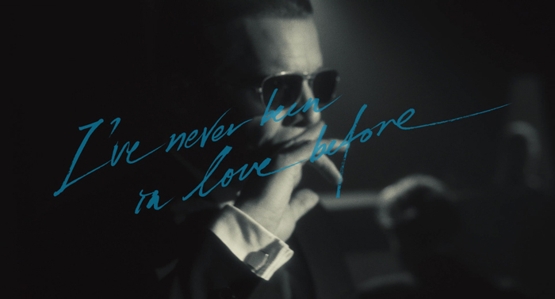

Movie

Born to be blue
영화,2015
“그의 음악에서는 청춘의 냄새가 난다”
-무라카미 하루키
청춘의 음색을 지닌 뮤지션 '쳇 베이커'
모두가 그의 음악을 사랑했지만,
더 이상 연주를 할 수 없어진 순간,
연인 ‘제인’과 트럼펫만이 곁에 남았다.
지금 이 순간이 마지막이라도,
들려주고 싶은 음악이 있다.
살아보고 싶은 인생이 있다.
다시, '쳇 베이커'만의 방식으로...